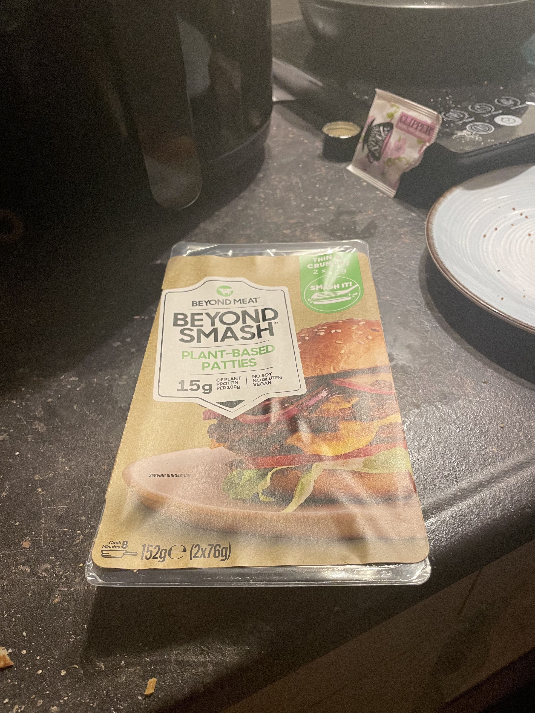
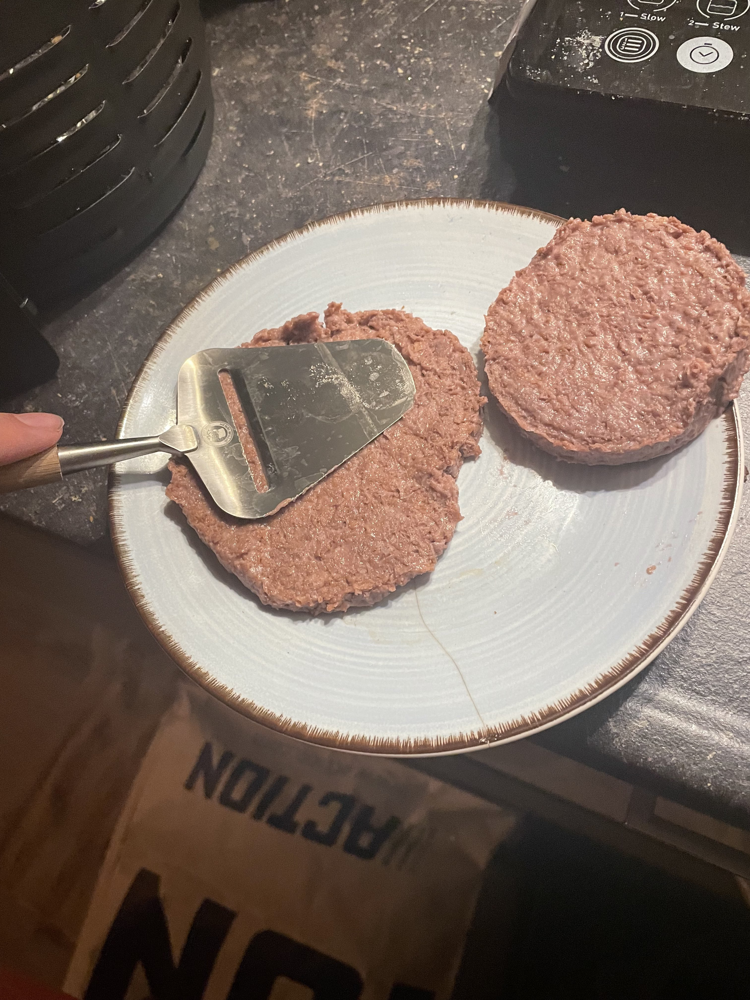
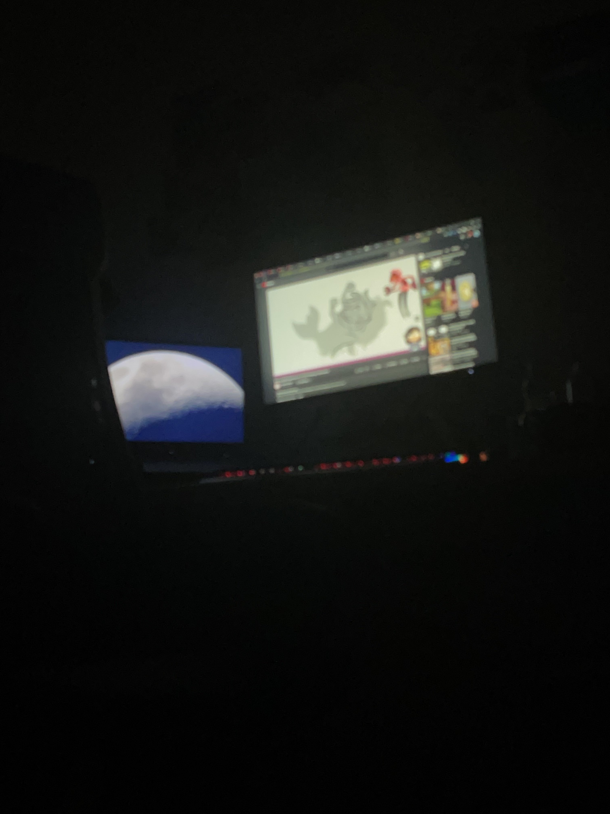
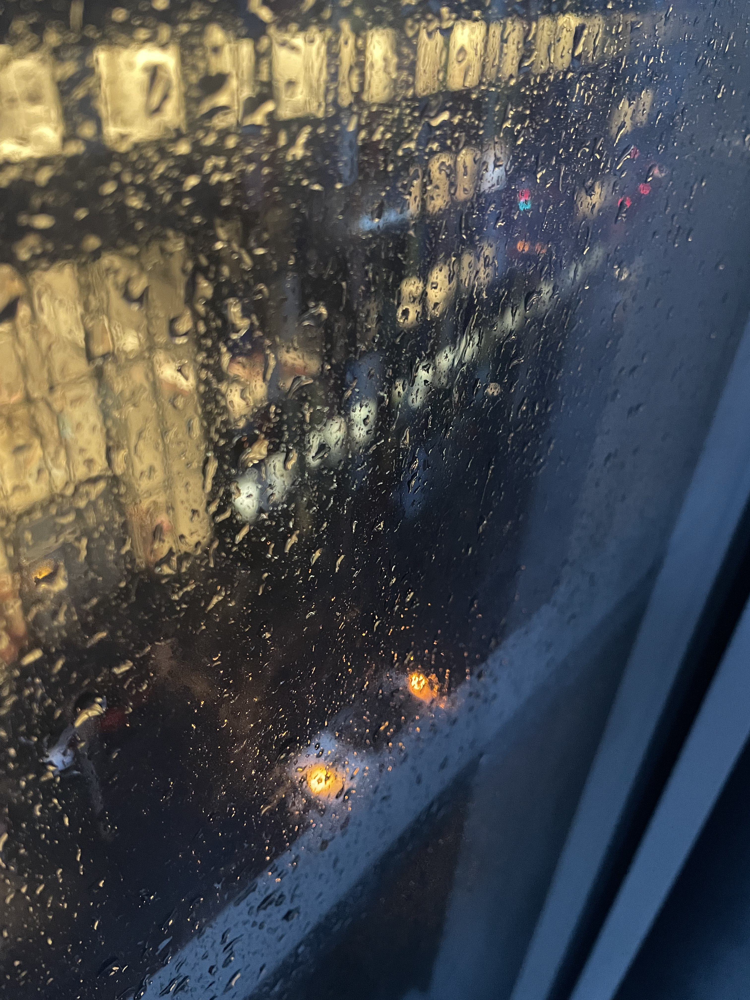
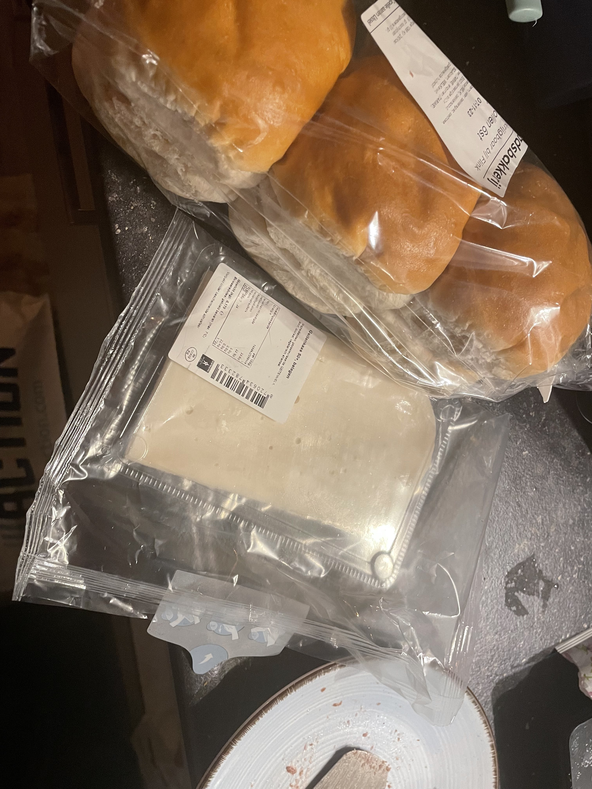
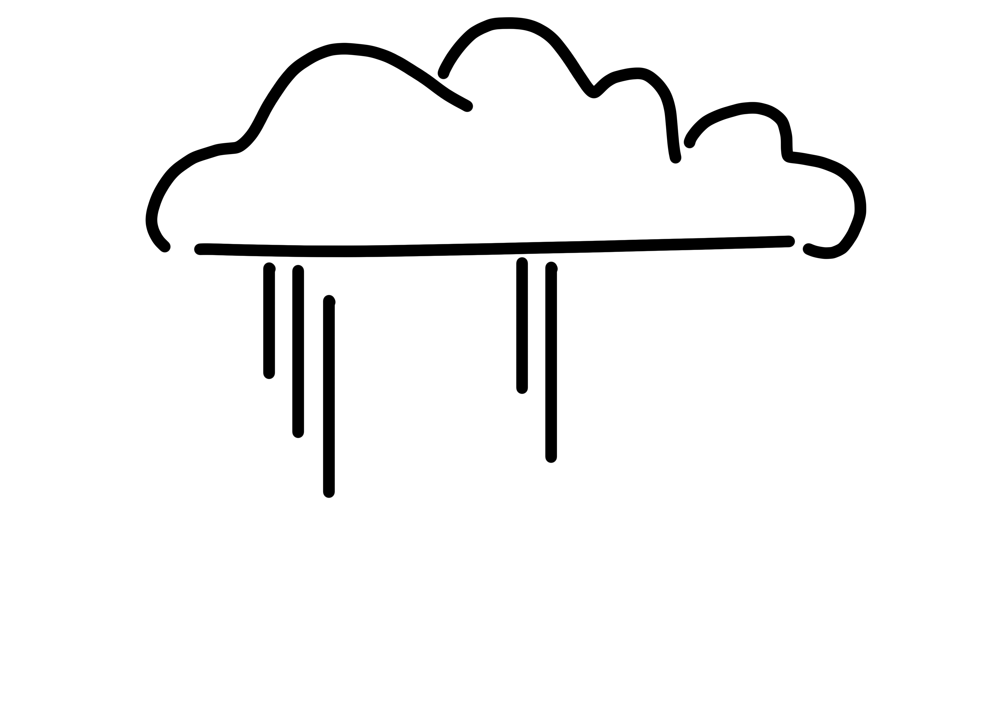

Preface
Hi there! Alot's been going on and even more's been on my mind lately. so apologies if this is a bit more low-effort than was expected
Prep time: aprox.15 min
Contains Gluten. Nut free
Hi there! Alot's been going on and even more's been on my mind lately. so apologies if this is a bit more low-effort than was expected
I picked up these Beyond Smash patties on my way home, let's see how they do
I took them out of the packaging and smooshed them down with my cheese slicer
Unfortunately, I smooshed them too wide, so I had to put them one by one in the airfryer. I set it up to 180 degrees for 15min,make sure to check on them and flip them every so often
Watching some Drawfee while we wait
It's nice and cozy out
I used what I had laying around for these burgers, so some buns and some goat cheese (naturally lactose free, fun fact)
And there we have it, a lazy meal for a cozy day
The patties were really nice and crispy from being in the airfryer, the cheese melted nicely. Great meal for a not-so-great day
